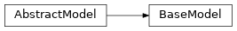

cxflow_tensorflow¶Main cxflow-tensorflow module exposing the cxflow_tensorflow.BaseModel allowing to define cxflow trainable models (networks).
Additional hooks, ops and util functions are available in the respective sub-modules.
The main design goal is to allow focusing on the model architecture while most of the burden code is hidden to the user.
In fact, in most cases one will override only a single method cxflow_tensorflow.BaseModel._create_model().
BaseModel:
Cxflow AbstractModel implementation for TensorFlow models.FrozenModel:
FrozenModel is cxflow compatible abstraction for loading and running frozen TensorFlow graphscxflow_tensorflow.BaseModel(dataset, log_dir, inputs, outputs, session_config=None, n_gpus=0, restore_from=None, optimizer=None, freeze=False, loss_name='loss', monitor=None, restore_fallback=None, **kwargs)[source]¶Bases: models.AbstractModel
Cxflow AbstractModel implementation for TensorFlow models.
To define a cxflow trainable model in TensorFlow, derive your class from BaseModel and override
_create_model() method.
See the method references for additional customization options.
SIGNAL_MEAN_NAME = 'signal_mean'¶Name of the monitored signal mean tensor/output.
SIGNAL_VAR_NAME = 'signal_variance'¶Name of the monitored signal variance tensor/output.
TRAINING_FLAG_NAME = 'cxf_is_training'¶Training flag variable name.
TRAIN_OP_NAME = 'train_op'¶Expected train op tensor name prefix.
__init__(dataset, log_dir, inputs, outputs, session_config=None, n_gpus=0, restore_from=None, optimizer=None, freeze=False, loss_name='loss', monitor=None, restore_fallback=None, **kwargs)[source]¶Create new cxflow trainable TensorFlow model.
TF Graph, train ops etc. are constructed with the following procedure:
tf.Graph and tf.Session with _create_session()_create_model() or _restore_model() respectively_create_train_ops() unless they are already restoredtf.SaverNote
In most cases, it is not required to re-define the __init__ method for your models.
Tip
It is often useful to monitor signal/weights/gradients ranges, means and/or variances during the training.
cxflow-tensorflow base model actually provides monitoring of the feed-forward signal through the net.
Simply set up the monitor paramater to the name of the layers to be monitored (e.g. Conv2D or Relu).
Layer activation means and variances (named signal_mean and signal_variance) will be include
in the output.
| Parameters: |
|
|---|
_create_model(**kwargs)[source]¶Create your TensorFlow model.
Every model has to define:
loss_nameWarning
To support multi-GPU training, all the variables must be created with tf.get_variable
and appropriate variable scopes.
| Parameters: | kwargs – model configuration as specified in model section of the configuration file |
|---|---|
| Return type: | None |
_create_session(session_config)[source]¶Create and return TF Session for this model.
By default the session is configured with tf.ConfigProto created with
the given session_config as **kwargs. Nested dictionaries such as
gpu_options or graph_options are handled automatically.
| Parameters: | session_config (Optional[dict]) – session configuration dict as specified in the config yaml |
|---|---|
| Return type: | Session |
| Returns: | TensorFlow session |
_create_train_ops(dependencies, optimizer_config)[source]¶Create the train ops for training. In order to handle incomplete batches, there must be one train op for
each number of empty towers. E.g. for 2 GPU training, one must define 2 train ops for 1 and 2 towers
respectively. The train ops must be named train_op_1, train_op_2 etc.
wherein the suffixed number stands for the number of towers.
model.optimizer configuration dictregularization_lossregularization_loss are computedTo implement a custom behavior, override this method and create your own op named as TRAIN_OP_NAME.
model:
optimizer:
class: RMSPropOptimizer
learning_rate: 0.001
| Parameters: | |
|---|---|
| Return type: |
|
_initialize_variables(**kwargs)[source]¶Initialize variables of your TensorFlow model.
By default variables are initialized randomly.
Tip
Override this method to load variables from some check-point and fine-tune the model.
| Parameters: | kwargs – model configuration as specified in model section of the configuration file |
|---|---|
| Return type: | None |
_restore_checkpoint(checkpoint_path)[source]¶Restore model from the given checkpoint_path.
| Parameters: | checkpoint_path (str) – full path to the checkpoint, e.g. my_dir/model_3.ckpt. |
|---|---|
| Return type: | None |
_restore_model(restore_from)[source]¶Restore TF model from the given restore_from path and restore_model_name.
The model name can be derived if the restore_from is a directory containing exactly one checkpoint or if
its base name specifies a checkpoint.
| Parameters: | restore_from (str) – path to directory from which the model is restored, optionally with model name as the last |
|---|
part
| Return type: | None |
|---|
graph¶TF graph object.
| Return type: | Graph |
|---|
is_training¶Training flag tensor.
This is useful for determining whether to use certain ops such as dropout.
| Return type: | Tensor |
|---|
run(batch, train=False, stream=None)[source]¶Run the model with the given batch. Update the trainable variables only if train is true.
Fetch and return all the model outputs as a dict.
| Parameters: | |
|---|---|
| Raises: | ValueError – if an output is wrongly typed or its batch size differs from the input batch size |
| Return type: | |
| Returns: | outputs dict |
save(name_suffix='')[source]¶Save current tensorflow graph to a checkpoint named with the given name suffix.
The checkpoint will be locaced in self.log_dir directory.
:type name_suffix: str
:param name_suffix: saved checkpoint name suffix
:rtype: str
:return: path to the saved checkpoint
session¶TF session object.
| Return type: | Session |
|---|
cxflow_tensorflow.FrozenModel(inputs, outputs, restore_from, session_config=None, n_gpus=0, **_)[source]¶Bases: models.AbstractModel
FrozenModel is cxflow compatible abstraction for loading and running frozen TensorFlow graphs
(.pb files).
In order to use it, just change the model.class configuration and invoke any cxflow command such as
cxflow eval ....
__init__(inputs, outputs, restore_from, session_config=None, n_gpus=0, **_)[source]¶Initialize new FrozenModel instance.
| Parameters: |
|---|
restore_frozen_model(restore_from)[source]¶Restore frozen TF model from the given restore_from path.
The model name can be derived if the restore_from is a directory containing exactly one checkpoint or if
its base name specifies a checkpoint.
| Parameters: | restore_from (str) – path to directory from which the model is restored, optionally with model name as the last |
|---|
part
| Return type: | None |
|---|
run(batch, train=False, stream=None)[source]¶Run the model with the given batch.
Fetch and return all the model outputs as a dict.
Warning
FrozenModel can not be trained.
| Parameters: | |
|---|---|
| Return type: | |
| Returns: | outputs dict |